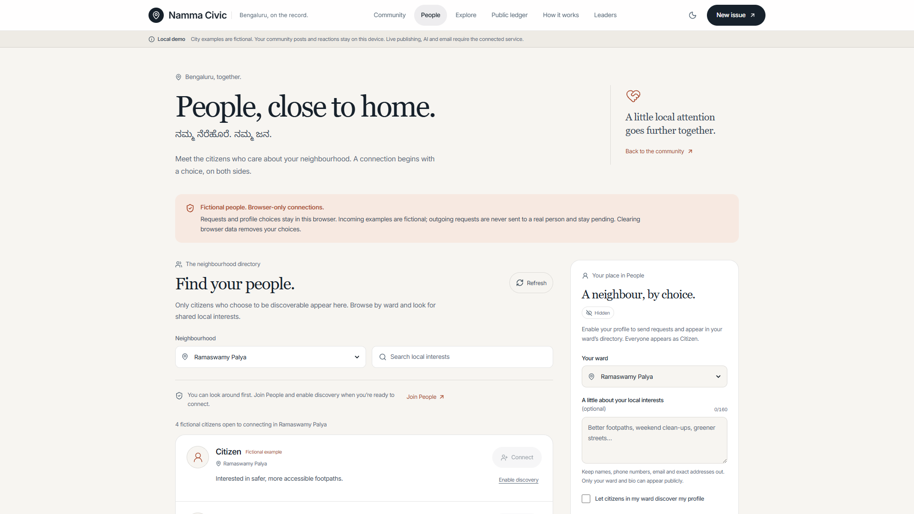

02 · Community
Find your
neighbourhood.
Discover people. Discuss local issues. Choose who to connect with.
Opt in
Two-sided consent

Genuine deployed People page · Fictional profiles and browser-local requests
Social reactions never decide whether a repair is verified.